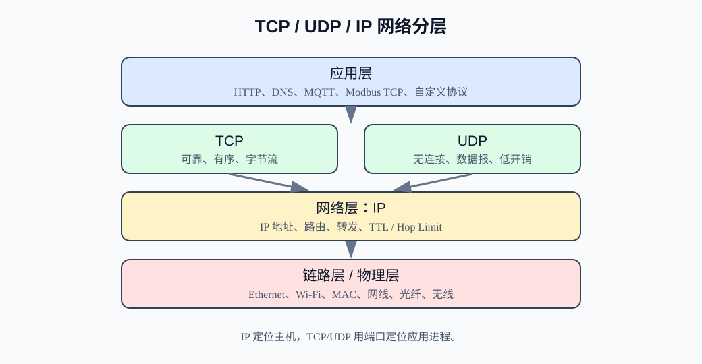
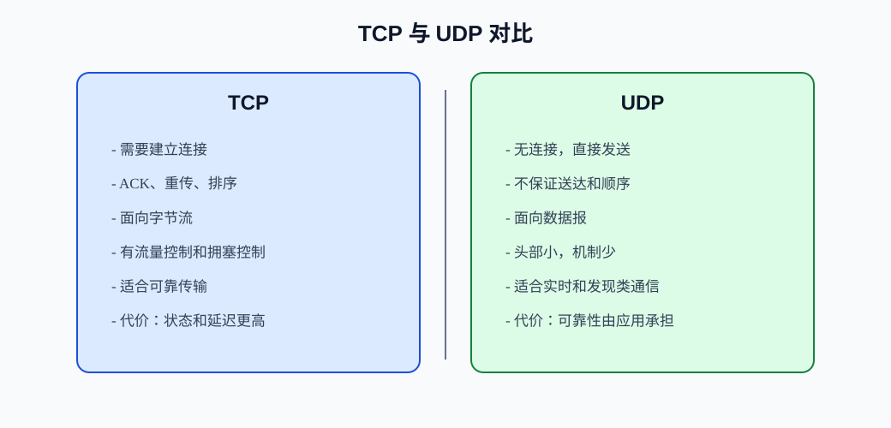
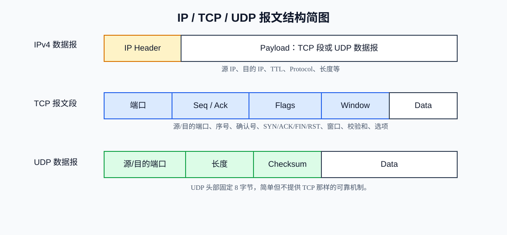
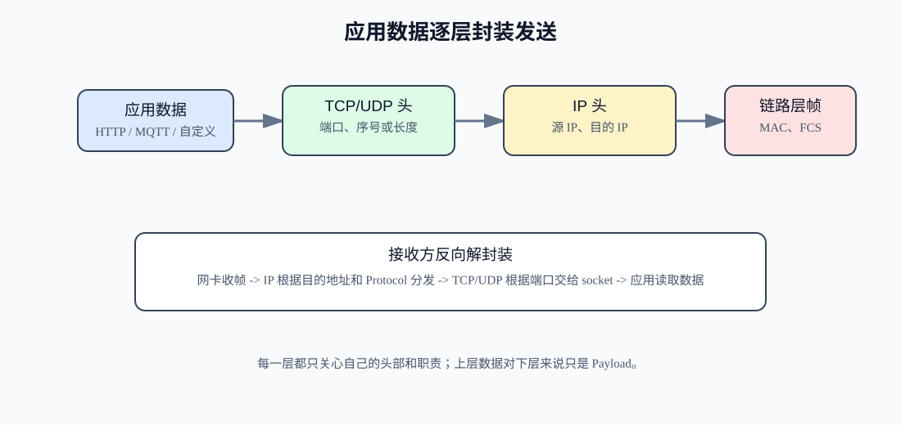
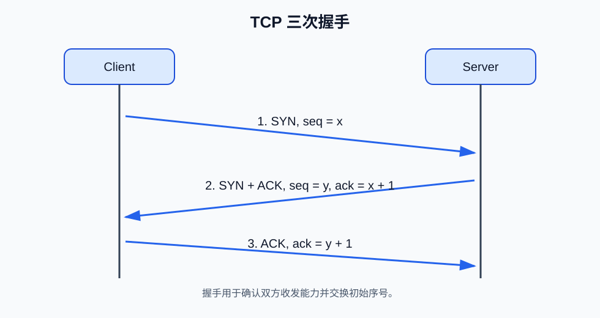
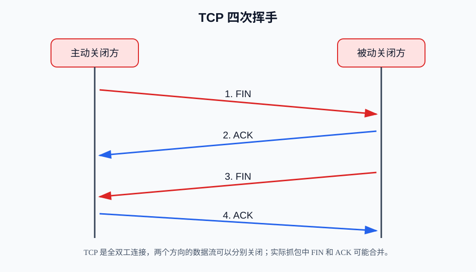
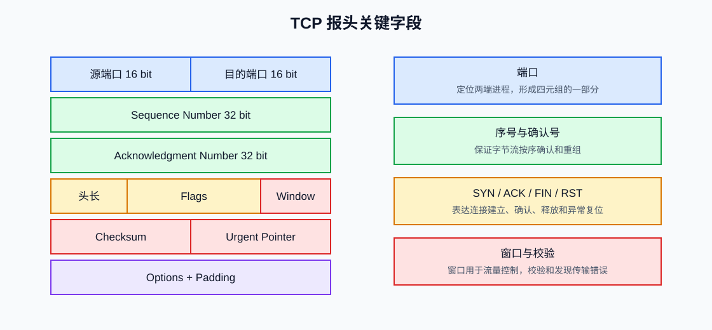
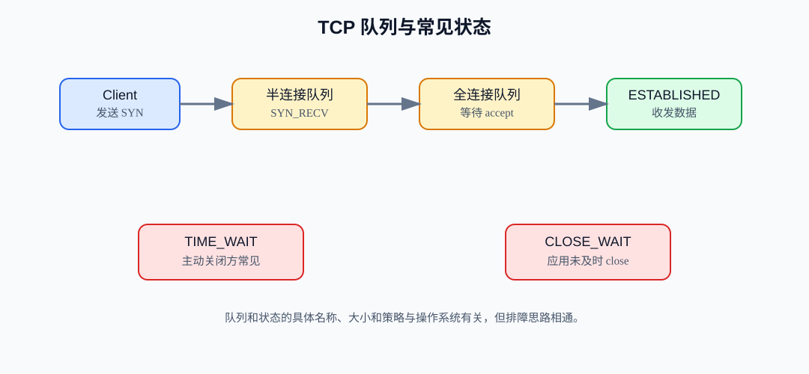
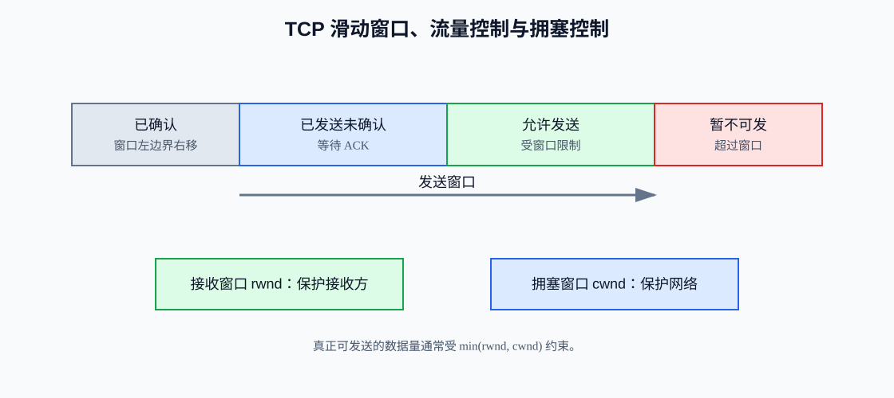
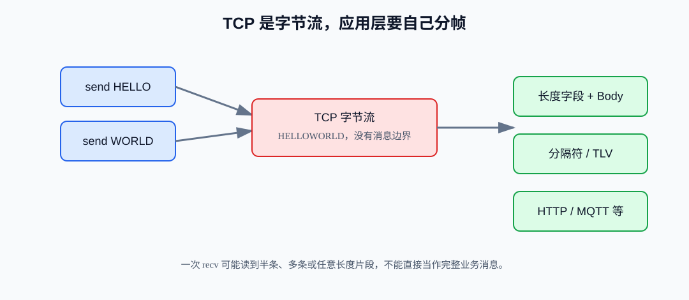

TCP / UDP / IP¶
TCP、UDP、IP 是网络通信里最基础、最常见的三组概念。对嵌入式和软件开发初学者来说，它们不像 UART、I2C、SPI 那样直接连几根线就能观察到，而是藏在网卡、协议栈、操作系统和 socket API 后面。但只要抓住“分层”和“封装”两个关键词，就能把它们串起来。
一句话先建立直觉：
- IP 负责把数据包从一台主机送到另一台主机，核心是寻址和转发。
- UDP 负责把应用数据用很小的开销发给某个端口，不保证可靠。
- TCP 负责在两个端口之间建立连接，并尽力提供可靠、有序的字节流。
这里的“可靠”不是永不丢包，而是 TCP 会通过确认、重传、排序、窗口控制等机制，让应用层看到一个尽量可靠、有序的数据流；如果网络长期不可用，它最终也会失败。
1. TCP / UDP / IP 概述¶
1.1 IP 是什么¶
IP 是 Internet Protocol，互联网协议。它工作在网络层，负责：
- 给主机或接口分配 IP 地址。
- 把数据封装成 IP 数据报。
- 根据目的 IP 地址进行路由和转发。
- 尽力把数据从源主机送到目的主机。
IP 提供的是 best effort service，常翻译为“尽力而为服务”。它不保证一定送达，不保证顺序，也不保证只送一次。
1.2 TCP 是什么¶
TCP 是 Transmission Control Protocol，传输控制协议。它工作在传输层，建立在 IP 之上，面向连接，提供可靠、有序、面向字节流的通信。
TCP 适合：
- 网页浏览中的 HTTP/HTTPS。
- 文件传输。
- SSH、远程登录。
- MQTT over TCP。
- 需要可靠传输的嵌入式网关或上位机通信。
1.3 UDP 是什么¶
UDP 是 User Datagram Protocol，用户数据报协议。它也工作在传输层，建立在 IP 之上，但不建立连接，不保证可靠，不保证顺序。
UDP 适合：
- DNS 查询。
- DHCP。
- 音视频实时传输。
- 局域网发现。
- 低延迟物联网数据上报。
- 应用层自己实现可靠性或容错的协议。
1.4 三者的关系¶
TCP 和 UDP 都依赖 IP 传输。应用层通常不会直接操作 IP 数据报，而是通过 TCP socket 或 UDP socket 发送数据。

可以记成：
应用数据
-> TCP 段 或 UDP 数据报
-> IP 数据报
-> 以太网帧 / Wi-Fi 帧
-> 物理介质
2. 网络为什么要分层¶
网络通信非常复杂：应用要表达业务数据，传输层要区分进程，网络层要跨网段找路，链路层要在一段物理链路上传输比特。如果所有问题都混在一起，协议会很难设计、调试和替换。
分层的好处：
- 每层只解决一类问题。
- 上层可以复用下层能力。
- 某一层变化时，尽量不影响其他层。
- 调试时可以逐层定位问题。
常见 TCP/IP 分层理解：
| 层次 | 典型协议 | 主要解决的问题 |
|---|---|---|
| 应用层 | HTTP、DNS、MQTT、Modbus TCP | 应用数据语义。 |
| 传输层 | TCP、UDP | 端到端进程通信，端口、多路复用、可靠性。 |
| 网络层 | IPv4、IPv6、ICMP | 主机寻址、跨网络路由转发。 |
| 链路层 | Ethernet、Wi-Fi、ARP | 同一链路内传输、MAC 地址、成帧。 |
| 物理层 | 双绞线、光纤、无线电 | 电信号、光信号、无线信号。 |
初学时可以把它类比成寄快递：
- 应用层：包裹里面是什么。
- TCP/UDP：交给哪个房间或窗口，也就是端口。
- IP：送到哪个城市和地址，也就是 IP 地址。
- 链路层：当前这一站怎么运输到下一站。
这个类比是为了帮助理解，并不完全等同于真实网络细节。
3. IP 的作用：寻址与转发¶
IP 最核心的任务是寻址和转发。
3.1 寻址¶
每个参与 IP 通信的网络接口通常有一个 IP 地址。发送方把目的 IP 写进数据报头部，网络设备根据这个目的 IP 决定下一跳。
例如：
源 IP：192.168.1.20
目的 IP：192.168.1.100
这说明数据要从 192.168.1.20 发往 192.168.1.100。
3.2 转发¶
如果目的主机不在本地链路，数据会交给网关或路由器。路由器查看目的 IP，根据路由表把 IP 数据报转发到下一跳。
IP 转发过程中可能发生：
- 数据报被转发多跳。
- TTL/Hop Limit 减少。
- 链路 MTU 不够导致分片，或直接丢弃并返回错误。
- 网络拥塞导致丢包。
IP 本身不负责重传。是否重传由 TCP 或应用层决定。
4. IP 地址、子网掩码、网关¶
4.1 IP 地址¶
IP 地址用于标识网络中的主机或接口。IPv4 地址是 32 位，通常写成点分十进制：
192.168.1.20
IPv6 地址是 128 位，通常写成十六进制冒号分组：
2001:db8::1
IP 地址不是端口号。IP 地址用于找到哪台主机，端口号用于找到这台主机上的哪个应用进程。
4.2 子网掩码¶
子网掩码用于区分 IP 地址中的网络部分和主机部分。
例如：
IP 地址： 192.168.1.20
子网掩码： 255.255.255.0
CIDR 写法：192.168.1.20/24
这表示前 24 位是网络号，所在网段通常是：
192.168.1.0/24
同一网段内的主机通常可以直接通过链路层通信；不同网段则需要通过网关转发。
4.3 默认网关¶
默认网关是“本机不知道怎么直接到达目标时，先交给谁”的路由器地址。
例如：
本机 IP：192.168.1.20
网关： 192.168.1.1
目标： 8.8.8.8
8.8.8.8 不在本地 192.168.1.0/24 网段，本机会把数据交给 192.168.1.1，由网关继续转发。
4.4 嵌入式设备常见配置¶
嵌入式以太网设备常见网络参数：
| 参数 | 示例 | 作用 |
|---|---|---|
| IP 地址 | 192.168.1.50 |
设备自身地址。 |
| 子网掩码 | 255.255.255.0 |
判断本地网段。 |
| 默认网关 | 192.168.1.1 |
访问外网或跨网段时使用。 |
| DNS | 8.8.8.8 或局域网 DNS |
域名解析。 |
| MAC 地址 | 00:11:22:33:44:55 |
链路层地址。 |
很多“TCP 连不上”的问题其实是 IP、掩码、网关、MAC、ARP、交换机或防火墙配置问题，不一定是 TCP 代码错误。
5. IPv4 基础¶
IPv4 是目前仍大量使用的 IP 版本。
IPv4 重要特点：
- 地址长度 32 位。
- 头部最小 20 字节。
- 支持分片。
- 使用 TTL 防止数据包无限循环。
- 头部有 checksum。
常见 IPv4 地址类型：
| 类型 | 示例 | 说明 |
|---|---|---|
| 私有地址 | 192.168.x.x, 10.x.x.x, 172.16.x.x 到 172.31.x.x |
局域网内部使用，通常通过 NAT 出网。 |
| 回环地址 | 127.0.0.1 |
本机回环测试。 |
| 链路本地地址 | 169.254.x.x |
自动配置失败等场景可能出现。 |
| 广播地址 | 255.255.255.255 或网段广播 |
IPv4 广播。 |
IPv4 地址数量有限，因此 NAT 非常常见。家庭路由器通常让内网设备使用私有地址，再通过 NAT 共享公网地址访问互联网。
6. IPv6 基础¶
IPv6 是为解决 IPv4 地址不足并改进网络能力而设计的下一代 IP。
IPv6 重要特点：
- 地址长度 128 位。
- 头部固定 40 字节，很多扩展功能放在扩展头中。
- 不使用广播，使用组播和任播等机制。
- 不在路由器中分片，分片由源主机处理。
- 使用 Hop Limit，类似 IPv4 TTL。
- 地址空间巨大，端到端寻址更充足。
IPv6 地址示例：
2001:db8:1:2::100
fe80::1
::1
常见类型：
| 类型 | 示例 | 说明 |
|---|---|---|
| 回环地址 | ::1 |
本机测试。 |
| 链路本地地址 | fe80::/10 |
同一链路内通信，常用于邻居发现。 |
| 全球单播地址 | 2000::/3 常见 |
可在全球范围路由。 |
| 组播地址 | ff00::/8 |
一对多通信。 |
嵌入式设备支持 IPv6 时，要特别注意：
- 地址可能不止一个。
- 链路本地地址通信可能需要指定接口。
- 防火墙和路由规则与 IPv4 不完全一样。
- 许多应用要同时处理 IPv4 和 IPv6。
7. 端口号是什么¶
IP 地址只能定位到主机，但一台主机上可能同时运行多个网络程序：
- Web 服务。
- SSH。
- DNS。
- MQTT Broker。
- 自定义 TCP Server。
端口号用于区分同一台主机上的不同应用。
例如：
192.168.1.100:80 -> Web HTTP
192.168.1.100:1883 -> MQTT
192.168.1.100:502 -> Modbus TCP
192.168.1.100:5000 -> 自定义服务
TCP 和 UDP 都有端口号，但它们的端口空间彼此独立。也就是说，同一个主机上可以同时存在：
TCP 53
UDP 53
它们不是同一个 socket。
端口号范围：
| 范围 | 名称 | 说明 |
|---|---|---|
0..1023 |
Well-known Ports | 常见标准服务端口，如 HTTP 80、HTTPS 443、DNS 53。 |
1024..49151 |
Registered Ports | 注册端口，许多应用协议使用。 |
49152..65535 |
Dynamic / Private Ports | 常用于客户端临时端口。 |
8. TCP 与 UDP 的核心区别¶

| 维度 | TCP | UDP |
|---|---|---|
| 连接 | 面向连接，需要建立连接 | 无连接，直接发数据报 |
| 可靠性 | 有确认、重传、排序 | 协议本身不保证 |
| 数据边界 | 面向字节流，没有消息边界 | 面向数据报，保留消息边界 |
| 顺序 | 应用看到的数据有序 | 可能乱序 |
| 拥塞控制 | 有 | 无，需要应用自己考虑 |
| 头部开销 | 至少 20 字节 | 8 字节 |
| 延迟 | 可能受握手、重传、拥塞控制影响 | 开销小、延迟低 |
| 适合场景 | 文件、网页、命令控制、可靠数据 | DNS、实时音视频、发现、低延迟上报 |
重要提醒：
- TCP 可靠不等于永不失败。网络断开、对端崩溃、超时后仍然会失败。
- UDP 快不等于任何场景都更好。没有重传和拥塞控制，应用要自己承担更多责任。
- TCP 是字节流，不保留应用层消息边界。一次
send()不一定对应一次recv()。 - UDP 保留数据报边界，但单个数据报过大容易分片或丢失。
9. IP、TCP、UDP 报文结构¶
9.1 IP 数据报¶
IP 数据报把传输层数据封装起来，并提供源地址、目的地址等网络层信息。
IPv4 头部常见字段：
- Version：版本，IPv4 为 4。
- IHL：头部长度。
- Total Length：总长度。
- Identification / Flags / Fragment Offset：分片相关。
- TTL：生存时间。
- Protocol：上层协议号，例如 TCP 是 6，UDP 是 17。
- Header Checksum：IPv4 头部校验。
- Source Address：源 IP。
- Destination Address：目的 IP。
9.2 TCP 报文段¶
TCP 报文段包含：
- 源端口、目的端口。
- 序号 Sequence Number。
- 确认号 Acknowledgment Number。
- 标志位 SYN、ACK、FIN、RST、PSH、URG 等。
- 窗口大小。
- 校验和。
- 选项。
- 应用数据。
9.3 UDP 数据报¶
UDP 头部非常简单：
- 源端口。
- 目的端口。
- 长度。
- 校验和。

这里的图是简化示意，真实协议头还有更多字段和选项。学习初期先抓住“IP 管地址，TCP/UDP 管端口，应用数据在最里面”即可。
10. IP、TCP、UDP 如何配合工作¶
应用发送一段数据时，并不是直接把数据扔到网线上。它会逐层封装。

以 TCP 为例：
- 应用调用
send()，交给操作系统一段字节。 - TCP 给数据加 TCP 头，形成 TCP segment。
- IP 给 TCP segment 加 IP 头，形成 IP datagram。
- 链路层加以太网头和尾，形成 Ethernet frame。
- 网卡把帧转换成物理信号发送出去。
接收方反过来逐层解封装：
- 网卡收到以太网帧。
- IP 层检查目的 IP 是否属于自己。
- 根据 IP 头里的 Protocol 字段交给 TCP 或 UDP。
- TCP/UDP 根据目的端口交给对应 socket。
- 应用通过
recv()或recvfrom()取走数据。
11. TCP 连接建立：三次握手¶
TCP 是面向连接的协议。通信前，双方要通过三次握手建立连接。

三次握手过程：
- Client 发送
SYN，表示请求建立连接，并携带自己的初始序号。 - Server 回复
SYN + ACK，确认 Client 的序号，同时发送自己的初始序号。 - Client 回复
ACK，确认 Server 的序号。
握手解决的问题：
- 双方确认彼此收发能力基本正常。
- 双方交换初始序号。
- 双方建立连接状态。
- 为后续可靠、有序传输做准备。
为什么不是两次？简化理解：TCP 需要双方都确认“我能发、你能收；你能发、我能收”。三次握手可以让双方的初始序号都被对方确认。
12. TCP 连接释放：四次挥手¶
TCP 是全双工通信，两个方向的数据流可以分别关闭。因此释放连接通常需要四次挥手。

典型过程：
- 一方发送
FIN，表示自己这个方向没有数据要发了。 - 对方回复
ACK，确认收到关闭请求。 - 对方剩余数据发送完后，也发送
FIN。 - 原发起方回复
ACK。
注意：
- 发送
FIN只表示“我不再发送数据”，但仍可能接收对方数据。 - 实际抓包中也可能看到
FIN + ACK合并。 - 如果连接异常，可能使用
RST直接复位连接。 - 主动关闭方通常会进入
TIME_WAIT状态一段时间。
TIME_WAIT 的存在是为了处理网络中可能延迟到达的旧报文，并确保最后一个 ACK 有机会被对端收到。开发服务器程序时，如果频繁重启遇到端口占用，常常和连接状态、地址复用选项有关。
13. TCP 的可靠传输机制¶
TCP 的可靠性来自一组机制共同工作，而不是某一个字段。
13.1 序号与确认¶
TCP 给字节流中的每个字节编号。接收方通过 ACK 告诉发送方：我已经收到了哪些数据，下一步期望哪个序号。
例如：
发送方发送 seq=1000，长度 500 字节
接收方收到后回复 ack=1500
这表示接收方已经收到 1000 到 1499 的字节，下一字节期望 1500。
13.2 重传¶
如果发送方迟迟收不到 ACK，或者收到重复 ACK，可能认为某些数据丢失，于是重传。
常见重传触发：
- 超时重传。
- 快速重传。
重传提升可靠性，但也带来延迟。弱网环境下，TCP 可能不是丢数据，而是在重传和等待中变慢。
13.3 顺序交付¶
IP 层可能乱序到达。TCP 接收方会按序重组字节流，再交给应用。
应用层通常看不到乱序段，但可能感受到阻塞：如果中间某段丢失，即使后面的数据已经到了，TCP 也要等缺失部分补齐后才能按序交付。
13.4 滑动窗口¶
如果每发一小段数据就等 ACK，效率很低。滑动窗口允许发送方在未收到全部 ACK 前连续发送一定量的数据。
窗口越大，链路利用率越高；但窗口也不能无限大，否则接收方缓存和网络拥塞都会出问题。
13.5 流量控制¶
流量控制保护接收方。接收方通过 TCP Window 告诉发送方自己还能接收多少数据。
如果接收方应用读取很慢，接收缓冲区快满了，就会通告较小窗口，甚至零窗口。发送方必须放慢速度。
13.6 拥塞控制¶
拥塞控制保护网络。发送方根据丢包、RTT、ACK 等信号估计网络承载能力，动态调整发送速度。
拥塞控制不是应用层直接控制的，但会影响吞吐和延迟。嵌入式设备如果在弱网络中传大文件，吞吐波动往往与拥塞控制、丢包和窗口有关。
14. TCP 的常见特性与代价¶
TCP 带来的好处：
- 应用不用自己处理乱序、丢包重传。
- 适合大多数可靠数据传输。
- 有成熟的拥塞控制和流量控制。
- 生态广泛，工具多，跨平台支持好。
TCP 的代价：
- 建立连接需要握手。
- 断开连接有状态处理。
- 头部开销和状态开销比 UDP 大。
- 重传可能导致延迟抖动。
- 面向字节流，不保留消息边界。
- 队头阻塞：前面数据缺失可能阻塞后面数据交付。
软件开发中尤其要注意“TCP 粘包/拆包”这个说法。更准确地说，TCP 是字节流协议，没有应用层消息边界。你发送两次：
send("ABC")
send("DEF")
接收方可能一次收到：
"ABCDEF"
也可能分多次收到：
"AB"
"CDE"
"F"
因此，基于 TCP 的应用协议必须自己设计消息边界，例如：
- 固定长度。
- 长度字段 + 数据。
- 分隔符。
- TLV。
15. UDP 的特点、适用场景与局限¶
UDP 的特点：
- 无连接。
- 头部小，只有 8 字节。
- 保留数据报边界。
- 不保证送达。
- 不保证顺序。
- 不自动重传。
- 不提供拥塞控制。
适合 UDP：
- DNS：请求短，失败可重试。
- DHCP：设备还没有 IP 时需要广播/发现。
- 实时音视频：宁可丢一帧，也不要等很久。
- 设备发现：局域网广播或组播。
- 遥测数据：下一包新数据比重传旧数据更有价值。
- 应用层已有可靠机制的协议。
不适合 UDP：
- 必须完整可靠传输的大文件，除非应用层自己实现可靠性。
- 不能容忍丢包且不想自己处理重传的控制命令。
- 公网复杂 NAT 环境下没有配套穿透设计的应用。
UDP 快的原因主要是机制少、开销小、没有连接状态。但“快”不代表实际体验一定好。网络拥塞时，如果应用无节制发送 UDP，可能造成更严重丢包，甚至影响整个网络。
16. 从 socket 编程视角理解 TCP/UDP¶
socket 是操作系统提供给应用程序的网络编程接口。开发者通常不直接构造 IP 头、TCP 头，而是调用 socket API。
16.1 TCP Server 基本流程¶
socket()
bind(ip, port)
listen()
accept()
recv() / send()
close()
含义：
socket()：创建 TCP socket。bind()：绑定本地 IP 和端口。listen()：开始监听连接。accept()：接受客户端连接，得到新的连接 socket。recv()/send()：收发字节流。close()：关闭连接。
16.2 TCP Client 基本流程¶
socket()
connect(server_ip, server_port)
send() / recv()
close()
connect() 会触发 TCP 三次握手。握手成功后，应用才开始发送业务数据。
16.3 UDP 基本流程¶
UDP Server 常见流程：
socket()
bind(ip, port)
recvfrom() / sendto()
close()
UDP Client 可以不显式连接：
socket()
sendto(server_ip, server_port)
recvfrom()
close()
也可以对 UDP socket 调用 connect()，但这不是 TCP 的连接建立。它通常只是记录默认对端地址，并让 socket 只接收该对端的数据。
16.4 嵌入式协议栈视角¶
在裸机或 RTOS 项目中，常见协议栈包括 lwIP、FreeRTOS+TCP、厂商以太网协议栈等。需要关注：
- 网卡驱动和 DMA 描述符是否正常。
- PHY 链路是否 up。
- MAC 地址是否唯一。
- IP 地址是否配置正确。
- DHCP 是否成功。
- TCP/UDP PCB 或 socket 是否正确释放。
- 接收缓冲区是否足够。
- 任务优先级是否导致协议栈处理不及时。
17. 典型应用场景¶
17.1 网页访问¶
现代网页通常基于 HTTP/HTTPS。传统 HTTP/1.1 和 HTTP/2 常运行在 TCP 之上，HTTPS 还会在 TCP 上增加 TLS。HTTP/3 则基于 QUIC，运行在 UDP 之上。
初学阶段可以先理解：
浏览器 -> TCP 连接 -> HTTP 请求/响应 -> 网页内容
17.2 文件传输¶
文件传输要求完整性，通常使用 TCP。例如 FTP、SFTP、HTTP 下载等。TCP 的可靠传输能减少应用层复杂度。
17.3 视频流和语音¶
实时音视频常偏向 UDP 或基于 UDP 的协议，因为低延迟比绝对可靠更重要。丢失一小段音视频可以隐藏或跳过，但等待重传可能造成卡顿。
17.4 DNS¶
DNS 查询常用 UDP 53。请求短、响应短、失败可以重试。某些大响应、区域传送或特殊场景也会使用 TCP。
17.5 物联网设备¶
物联网场景中：
- MQTT 常运行在 TCP 上，适合可靠消息。
- CoAP 常运行在 UDP 上，适合轻量设备。
- Modbus TCP 使用 TCP 502。
- 私有协议可能选择 TCP 或 UDP，取决于可靠性、实时性、功耗和网络环境。
嵌入式设备不要只凭“UDP 快”或“TCP 可靠”做选择，要结合业务需求：数据能不能丢、能不能乱序、是否要穿 NAT、是否要加密、是否要低功耗休眠。
18. 常见网络工具与调试方法¶
18.1 ping¶
ping 使用 ICMP Echo 测试网络可达性和往返时间。
常用：
ping 192.168.1.100
ping 8.8.8.8
能 ping 通说明 IP 层基本可达，但不能说明 TCP 端口一定开放。不能 ping 通也不一定说明主机不存在，因为防火墙可能禁用 ICMP。
18.2 traceroute / tracert¶
用于查看到目标路径经过哪些路由跳数。
Windows：
tracert 8.8.8.8
Linux/macOS：
traceroute 8.8.8.8
适合排查跨网段、网关、运营商路径问题。
18.3 netstat / ss¶
查看本机连接、监听端口和连接状态。
Windows：
netstat -ano
Linux：
ss -tulpen
ss -ant
常用于确认：
- 服务是否在监听目标端口。
- TCP 连接状态。
- 端口是否被占用。
- 客户端是否已经建立连接。
18.4 Wireshark¶
Wireshark 是网络抓包分析工具。它可以看到 Ethernet、IP、TCP、UDP、DNS、HTTP、Modbus TCP 等多层协议。
常用过滤器：
ip.addr == 192.168.1.100
tcp.port == 502
udp.port == 53
tcp.flags.syn == 1
icmp
抓包排查思路：
- 是否有 ARP。
- 是否发出 SYN。
- 是否收到 SYN/ACK。
- 是否有 RST。
- 是否有重传。
- TCP payload 是否符合应用协议。
- UDP 是否发到正确 IP 和端口。
18.5 嵌入式现场排查¶
常见组合：
- PC 直连设备，固定 IP 测试。
- 交换机镜像端口抓包。
- 串口日志打印协议栈状态。
- 查看 PHY link LED。
- 用 TCP/UDP 测试工具模拟对端。
- 用 Wireshark 验证设备是否真的发包。
19. 常见错误与排障思路¶
19.1 IP 层问题¶
现象：
- ping 不通。
- ARP 没有响应。
- 不同网段无法访问。
检查：
- IP 是否冲突。
- 子网掩码是否正确。
- 默认网关是否正确。
- 网线、交换机、PHY 是否正常。
- MAC 地址是否唯一。
- 防火墙是否阻止 ICMP。
19.2 TCP 连接问题¶
现象：
- connect 超时。
- connect 被拒绝。
- 连接建立后很快断开。
- 数据收不到或延迟大。
检查：
- 服务端是否 listen。
- IP 和端口是否正确。
- 防火墙是否拦截。
- 是否收到 SYN/ACK 或 RST。
- 服务端 accept 队列是否满。
- 应用协议是否处理 TCP 字节流边界。
- 是否存在大量重传或零窗口。
19.3 UDP 通信问题¶
现象：
- 发送方显示已发送，接收方没收到。
- 偶发丢包。
- 局域网广播不可用。
检查：
- 目的 IP 和端口是否正确。
- 接收端是否 bind 到正确端口。
- 防火墙是否拦截 UDP。
- 广播地址是否正确。
- 路由器是否转发广播或组播。
- 数据报是否太大导致分片或被丢弃。
19.4 嵌入式常见问题¶
- DHCP 未完成就开始连接服务器。
- 使用了错误网关，导致跨网段失败。
- MAC 地址重复，导致 ARP 混乱。
- 网卡 DMA 缓冲区不足，导致丢包。
- TCP 发送缓冲区满，但应用没有处理返回值。
- 使用阻塞 socket 导致任务卡死。
- 心跳包设计不合理，误判掉线。
- 没有区分网络断开、对端关闭和应用层超时。
20. 与串口、CAN、Modbus 等嵌入式协议的区别¶
| 项目 | TCP/UDP/IP | UART/USART | CAN | Modbus |
|---|---|---|---|---|
| 主要层次 | 网络层 + 传输层 | 串行通信硬件/链路基础 | 总线协议 | 应用层协议 |
| 地址概念 | IP 地址 + 端口 | 通常无地址，除非上层自定义 | CAN ID | 站号、寄存器地址 |
| 典型距离 | 局域网到互联网 | 板级或短距离 | 车载/工业总线 | 常跑在串口或 TCP 上 |
| 可靠性 | TCP 可靠，UDP 不保证 | 取决于自定义协议 | 有仲裁、CRC、ACK、错误机制 | 依赖 RTU CRC 或 TCP |
| 拓扑 | 通过交换机/路由器扩展 | 常点对点 | 多节点总线 | 主从或 client/server |
| 编程接口 | socket | 串口驱动 | CAN 驱动/API | 应用层读写寄存器 |
容易混淆的点：
- Modbus TCP 是应用层协议，运行在 TCP/IP 之上。
- CAN ID 不是 IP 地址，CAN 总线没有端口号概念。
- UART 只负责字节收发，不像 TCP 自动处理可靠传输。
- UDP 和 CAN 都是“消息式”体验，但它们处在完全不同的网络体系中。
- TCP/IP 可以跨路由器通信，普通串口、I2C、SPI、CAN 通常局限在本地链路或总线。
21. 工程实践建议¶
21.1 选 TCP 还是 UDP¶
优先选 TCP：
- 数据必须完整到达。
- 应用不想自己处理重传、排序。
- 通信双方是一对一长连接。
- 需要 TLS 加密生态。
- 使用 HTTP、MQTT、Modbus TCP 等现成协议。
考虑 UDP：
- 数据实时性比完整性更重要。
- 允许丢少量数据。
- 需要广播、组播或发现。
- 请求响应很短，应用可以自己重试。
- 使用 CoAP、RTP、部分自定义遥测协议。
21.2 TCP 应用协议设计¶
建议：
- 明确消息边界，不要假设一次 send 对应一次 recv。
- 使用长度字段或 TLV。
- 定义心跳和超时。
- 定义版本号，方便协议升级。
- 对大数据分片或流式处理。
- 正确处理半包、粘包、断连、重连。
21.3 UDP 应用协议设计¶
建议：
- 控制单个数据报大小，避免 IP 分片。
- 给消息加序号，便于检测丢包和乱序。
- 重要命令增加 ACK 和重试。
- 对实时数据允许旧包过期。
- 加入应用层限速，避免拥塞。
- 必要时考虑 DTLS 或应用层鉴权。
21.4 嵌入式设备网络设计¶
建议：
- 固件启动后先确认链路 up，再启动 DHCP 或静态 IP。
- 网络状态变化要通知应用层。
- socket 错误要分类处理，不要只打印“失败”。
- 长连接要设计心跳和重连退避。
- 关键参数支持本地恢复默认值，避免配错 IP 后设备失联。
- 出厂 MAC 地址必须唯一。
- 调试版本保留网络统计：收包数、发包数、丢包数、重传数、连接状态。
22. 初学者常见误区¶
22.1 IP、TCP、UDP 在同一层¶
不是。IP 在网络层，TCP 和 UDP 在传输层。TCP/UDP 使用 IP 把数据送到目标主机。
22.2 IP 地址和端口号是一回事¶
不是。IP 地址定位主机，端口号定位主机上的应用进程。192.168.1.10:80 中，192.168.1.10 是 IP，80 是端口。
22.3 TCP 可靠等于永不丢包¶
不是。底层仍然会丢包，TCP 只是通过 ACK、重传、排序等机制尽量修复。如果网络不可用，TCP 连接也会超时或断开。
22.4 UDP 快，所以一定比 TCP 好¶
不是。UDP 只是机制更少、开销更低。可靠性、拥塞控制、重传、排序都需要应用自己考虑。很多业务用 UDP 反而更难写好。
22.5 TCP 是消息协议¶
不是。TCP 是字节流协议。应用层必须自己定义消息边界。
22.6 ping 通就代表服务可用¶
不是。ping 只说明 ICMP 层面可能可达，不能说明目标 TCP/UDP 端口开放，也不能说明应用协议正常。
23. 学习路线¶
建议按下面顺序练习：
- 配置两台设备在同一网段，互相 ping。
- 用
ipconfig或ip addr查看 IP、掩码、网关。 - 用
netstat或ss查看本机监听端口。 - 写一个 TCP echo server/client。
- 故意一次发送多条消息，观察 TCP 粘包/拆包现象。
- 写一个 UDP echo server/client。
- 用 Wireshark 抓 TCP 三次握手和四次挥手。
- 抓 DNS UDP 查询，观察 UDP 数据报。
- 抓 Modbus TCP 或 HTTP，理解应用层如何运行在 TCP 之上。
- 在嵌入式板卡上移植或使用 lwIP，观察从链路 up 到 socket 通信的完整流程。
24. TCP 专题补充：报头、状态与控制机制¶
这一节根据参考文章和 RFC 9293 的 TCP 规范重新整理，作为前面 TCP 基础内容的补充。为了避免死记硬背，可以按三条线理解 TCP：
- 报头字段：TCP 靠哪些字段表达连接、顺序、确认、窗口和控制。
- 状态机：连接建立、释放和异常断开时，双方状态如何变化。
- 控制机制：可靠传输、滑动窗口、拥塞控制、粘包处理如何落到工程实现。

24.1 TCP 报头字段再拆解¶
TCP 报头最小 20 字节，带选项时会更长。常用字段如下：
| 字段 | 作用 |
|---|---|
| Source Port / Destination Port | 源端口和目的端口，用于定位两端应用进程。 |
| Sequence Number | 序号，表示本报文段数据第一个字节在字节流中的编号。 |
| Acknowledgment Number | 确认号，表示期望收到的下一个字节序号。 |
| Data Offset | TCP 头部长度，用于找到数据起始位置。 |
| Flags | 控制位，如 SYN、ACK、FIN、RST、PSH、URG。 |
| Window Size | 接收窗口大小，用于流量控制。 |
| Checksum | 校验 TCP 头部、数据和伪首部，发现传输错误。 |
| Urgent Pointer | 与 URG 配合表示紧急数据位置，现代应用较少直接使用。 |
| Options | MSS、窗口扩大、SACK、时间戳等扩展能力。 |
常见控制位：
SYN：请求建立连接并同步初始序号。ACK：确认号有效。FIN：发送方没有更多数据要发送，准备关闭一个方向的数据流。RST：复位连接，常见于端口未监听、连接异常、应用强制关闭。PSH：提示接收端尽快把数据交给应用。URG：紧急指针有效，现代普通业务很少用。
24.2 初始序号 ISN 为什么要随机¶
三次握手中双方都会选择自己的初始序号，常称 ISN。ISN 不应该固定从 0 开始，而应尽量不可预测。
原因包括：
- 避免旧连接中的延迟报文被新连接误认为有效数据。
- 降低伪造 TCP 报文注入连接的风险。
- 让不同连接的序号空间错开，减少混淆。
所以抓包时看到 SYN 的 seq 不是 0 很正常。许多抓包工具为了方便阅读，会显示相对序号，例如把某条连接的初始序号折算成 0。
24.3 三次握手中的队列：半连接队列与全连接队列¶
服务器调用 listen() 后，内核会维护连接相关队列。不同操作系统实现细节不同，但常见理解可以分成：
- 半连接队列：收到客户端 SYN，服务器已回复 SYN+ACK，但还没收到最后 ACK。
- 全连接队列：三次握手完成，等待应用
accept()取走。

工程现象：
- SYN 洪泛攻击会消耗半连接队列资源。
- 应用处理
accept()太慢，可能导致全连接队列堆积。 - 客户端连接被拒绝、超时，不一定是网络不通，也可能是服务端队列、进程或防火墙策略问题。
排查方向：
- 服务是否真的在监听端口。
- backlog 设置是否过小。
- 服务器 CPU 是否被打满。
- 防火墙或安全组是否限制连接。
- 是否存在大量
SYN_RECV或连接积压。
24.4 TIME_WAIT 与 CLOSE_WAIT¶
TCP 关闭连接时，经常会看到 TIME_WAIT 和 CLOSE_WAIT。
TIME_WAIT 常出现在主动关闭连接的一方。它的意义是：
- 等待网络中旧报文自然消失。
- 确保最后一个 ACK 丢失时，对端重发 FIN 后还能再次确认。
- 避免相同四元组的新连接被旧报文干扰。
四元组是：
源 IP、源端口、目的 IP、目的端口
CLOSE_WAIT 常出现在被动关闭方。它表示：
- 对端已经发送 FIN。
- 本机内核已经确认。
- 但本机应用还没有关闭 socket。
如果服务器上出现大量长期不消失的 CLOSE_WAIT，通常是应用代码没有在读到对端关闭后及时 close()，这更像应用资源泄漏，不是 TCP 协议本身的问题。
24.5 确认、累计确认、延迟应答、捎带应答¶
TCP 使用 ACK 确认数据。确认号表示“我期望收到的下一个字节序号”，因此 TCP 默认具有累计确认特性。
例如接收方回复：
ACK = 5000
表示 5000 之前的字节都已经按序收到，下一步希望收到序号 5000 开始的数据。
常见确认策略：
- 累计确认：一个 ACK 可以确认前面连续收到的一段数据。
- 延迟应答：接收方不一定每收到一个报文段立刻 ACK，可能短暂等待，看是否能合并确认。
- 捎带应答：如果接收方也有数据要发，可以把 ACK 放在自己的数据报文段中一起发。
这些策略能减少小 ACK 包数量，提高效率。但也意味着抓包时不要期待每个 TCP segment 都立刻对应一个 ACK。
24.6 滑动窗口与流量控制¶
滑动窗口解决的是“发送方能连续发多少数据而不用每段都停下来等 ACK”。

窗口里可以分成几段理解：
- 已发送并已确认：可以移出窗口。
- 已发送但未确认：等待 ACK。
- 允许发送但尚未发送：应用和内核还可以继续填充。
- 暂时不能发送：超过接收方通告窗口或拥塞窗口限制。
流量控制保护接收方。接收方通过 Window 字段告诉发送方自己还有多少接收缓存。
如果应用层迟迟不读取 socket，接收缓冲区变小，接收窗口也会变小。严重时会出现零窗口，发送方只能暂停大量发送，并用窗口探测等待恢复。
24.7 拥塞控制：慢启动、拥塞避免、快速重传、快速恢复¶
流量控制看接收方能力，拥塞控制看网络承载能力。TCP 不能只因为接收方窗口很大就无限发送，否则中间网络可能被打爆。
经典拥塞控制可按几个阶段理解：
- 慢启动：连接开始时谨慎发送，拥塞窗口从小变大，通常呈指数增长。
- 拥塞避免：窗口达到阈值后增长变慢，趋向线性增加。
- 快速重传：收到多个重复 ACK 时，推测中间某段丢失，不必等超时就重传。
- 快速恢复：发生快速重传后降低窗口，但不完全回到最初状态。
工程观察：
- 丢包不一定导致连接断开，但会造成重传和吞吐下降。
- 高延迟链路上，如果窗口太小，带宽利用率会很差。
- 弱网中“TCP 很慢”往往是丢包、RTT、窗口、拥塞控制共同作用的结果。
24.8 TCP 粘包与拆包：本质是字节流¶
“粘包”不是 TCP 把包粘坏了，而是 TCP 本来就是字节流协议，没有应用层消息边界。
应用连续发送：
send("HELLO")
send("WORLD")
接收方可能读到：
"HELLOWORLD"
也可能读到：
"HE"
"LLOWOR"
"LD"

解决方法是应用层自己设计协议边界：
- 固定长度消息。
- 长度字段 + Payload。
- 分隔符，例如以换行结尾。
- TLV，Type-Length-Value。
- 使用成熟上层协议，如 HTTP、MQTT、WebSocket。
嵌入式工程建议：
- 不要写“收到一次 recv 就解析一帧完整业务包”的代码。
- 接收端维护缓冲区，循环判断是否够一条完整消息。
- 长度字段要限制最大值，避免内存被恶意长度打爆。
- 超时、半包、异常断连都要有处理路径。
24.9 TCP 保活与应用心跳¶
TCP Keepalive 是内核层的保活机制，但默认间隔往往很长，不适合所有业务。很多应用还会设计自己的心跳包。
区别：
- TCP Keepalive：用于探测连接是否还存在，通常由操作系统控制。
- 应用心跳：业务层自定义，可以携带设备状态、时间戳、会话状态等。
嵌入式设备连接云平台时，常见做法是：
- TCP 连接成功后周期发送应用心跳。
- 连续几次心跳无响应后主动断开并重连。
- 重连使用退避策略，避免网络恢复时所有设备同时冲击服务器。
24.10 TCP 排障 checklist¶
遇到 TCP 问题时，可以按层次排查：
| 现象 | 优先检查 |
|---|---|
connect() 立刻失败 |
端口未监听、防火墙拒绝、RST、目标地址错误。 |
connect() 超时 |
路由不通、防火墙丢弃、服务器无响应、SYN 包无回复。 |
| 连接建立后无数据 | 应用协议没发、服务端阻塞、对端等待换行或长度字段。 |
| 数据偶发很慢 | 重传、丢包、窗口太小、Nagle/延迟 ACK 交互、应用读取慢。 |
大量 TIME_WAIT |
主动关闭频繁，通常是正常现象，但需评估端口复用和连接池。 |
大量 CLOSE_WAIT |
应用未及时关闭 socket，重点查代码。 |
| 抓包有重复 ACK | 可能乱序或丢包，继续看是否快速重传。 |
| 服务器端口占用 | 旧进程未退出、连接状态未释放、未设置地址复用。 |